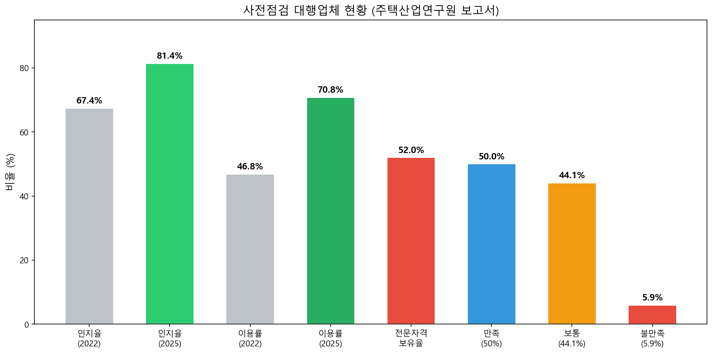
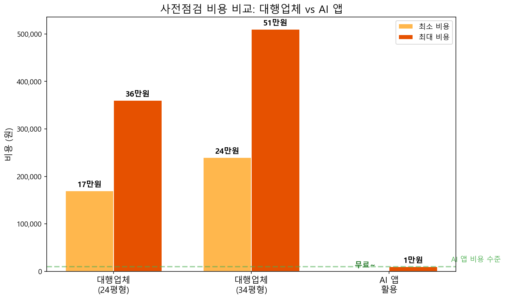
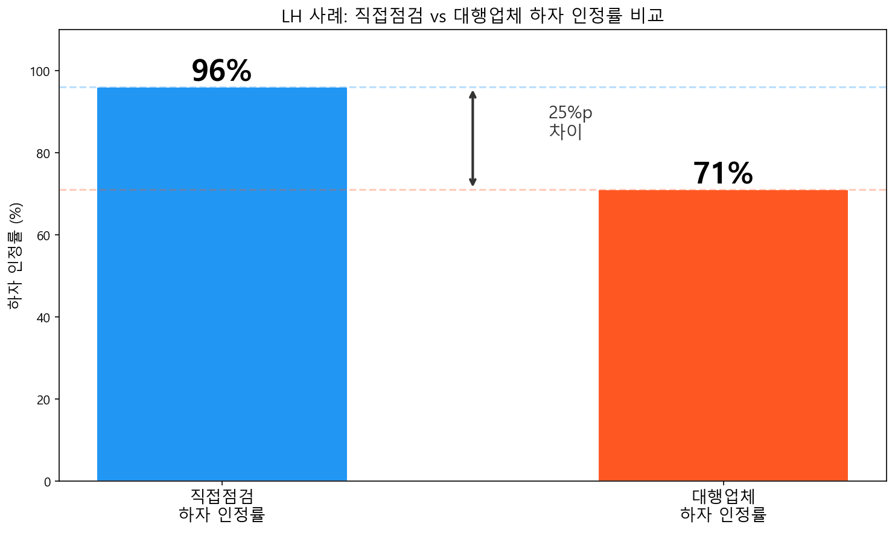
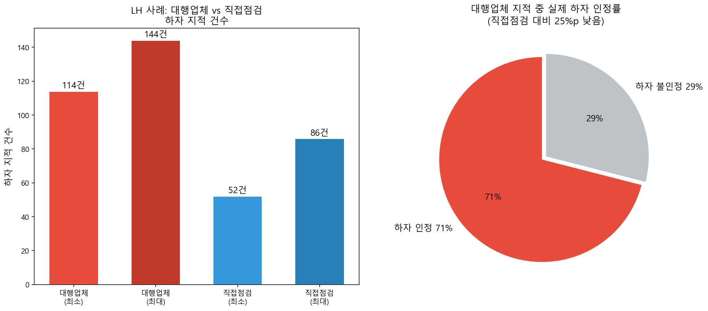
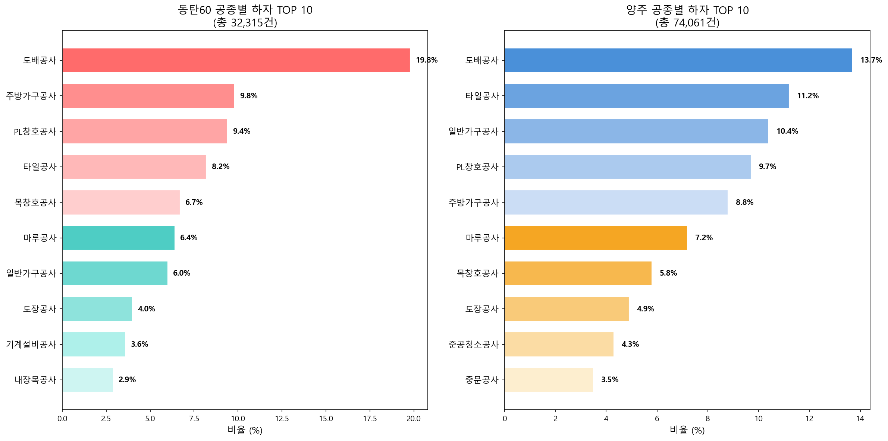
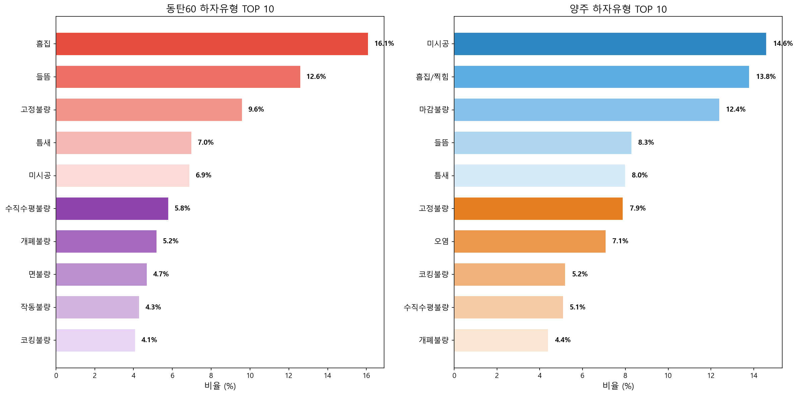
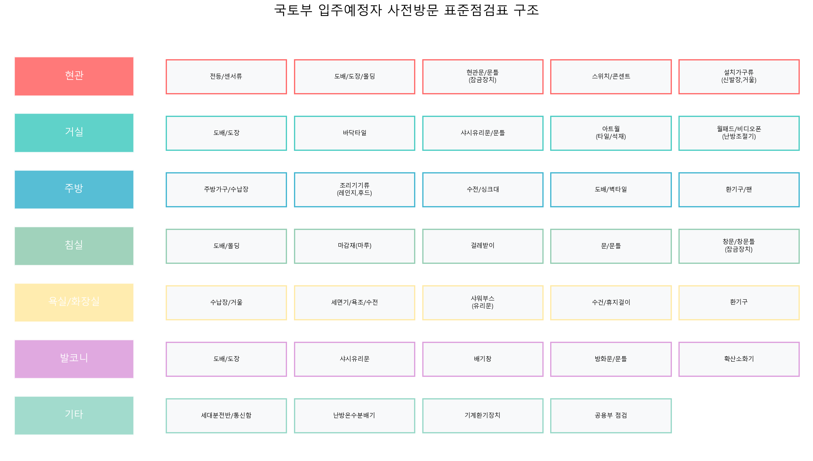
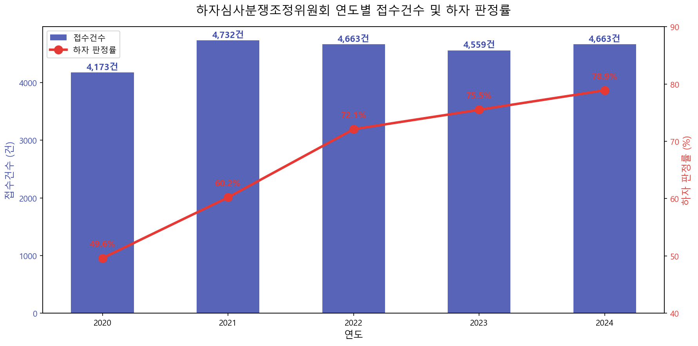
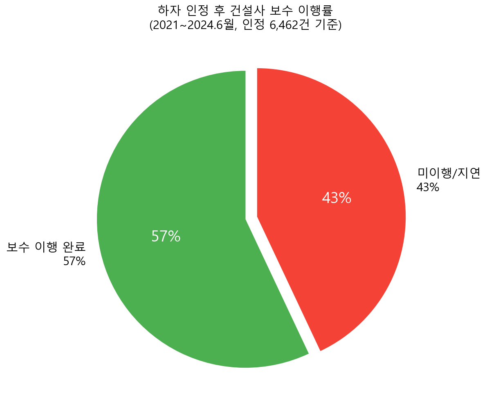
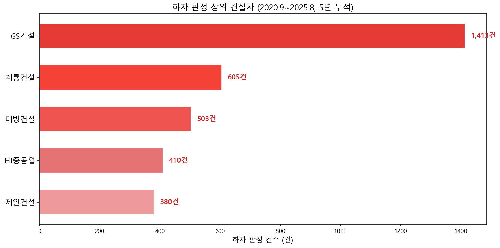

2021년 2월부터 주택법 제48조의2에 의해 시행된 입주자 사전방문 제도 덕분에, 입주 전 내 집의 하자를 미리 확인하고 시공사에 보수를 요청할 수 있게 되었는데요.
그런데 최근 사전점검을 둘러싼 논란이 끊이지 않고 있습니다.
대행업체의 과잉 진단, 무자격 점검원, 건설사와의 갈등, 그리고 하자 인정 후에도 43%가 보수되지 않는 현실까지...
오늘은 106,376건의 실제 사전점검 데이터, 언론 보도, 법적 근거를 바탕으로 사전점검의 현실을 낱낱이 분석하고, 분쟁 시 대응 방법, 향후 제도 개선 방향, 그리고 AI 기반의 새로운 대안까지 소개해드리겠습니다.
⚖ 사전점검의 법적 근거
| 조항 | 내용 |
|---|---|
| 제1항 | 사업주체는 사용검사 전에 입주예정자가 주택을 방문하여 공사 상태를 미리 점검(사전방문)할 수 있게 하여야 한다 |
| 제2항 | 입주예정자는 사전방문 결과 결함이 있으면 사업주체에게 보수공사 등 적절한 조치를 요청할 수 있음 |
| 제3항 | 사업주체는 중대한 하자는 사용검사 전까지 조치 완료해야 함 |
| 실무 요건 | 사업주체는 준공일 45일 전까지 2일 이상 사전점검행사 실시 의무 |
이 법에 따라 모든 입주예정자는 사전점검을 받을 법적 권리가 있습니다. 그런데 이 과정에서 전문 대행업체를 이용하는 비율이 급격히 늘면서, 새로운 문제가 대두되고 있습니다.
주택산업연구원의 '아파트 사전방문 점검대행 실태' 보고서와 뉴시스 보도(2026.03.15)에 따르면, 전국 약 40개 대행업체가 영업 중이며, 시장 규모가 급격히 커지고 있습니다.

⚠ 대행업체 비용 현황
- 평당 가격: 7,000원~15,000원 (평균 10,000~12,000원)
- 59m²(24평형): 약 17만~36만원
- 84m²(34평형): 약 24만~51만원
- 입주자 카페 입점비, 검색광고비 등 홍보비가 가격에 반영되는 구조

🚨 전문자격 보유율 실태 (16개 업체, 1,099명 조사)
- 전체 전문자격 보유율: 52% (절반만 자격 보유)
- 건축/토목 분야: 70% (상대적으로 양호)
- 시설/설비 분야: 단 5%
- 기타 분야: 단 8%
- 일부 업체는 수십~수백 건 예약 소화를 위해 단기 아르바이트를 투입하는 실정

📈 LH 사례로 본 구체적 수치
- 대행업체 지적 하자: 114~144건
- 입주자 직접 점검: 52~86건 (최대 2.7배 차이)
- 대행업체 하자 인정률: 71%
- 직접점검 하자 인정률: 96% (25%p 높음)
- 주된 원인: 공법 이해 부족, 정상 상태를 하자로 오인
- 미설치 제품(사전 안내된 품목)까지 하자로 지적 → 건수 20~30% 부풀려짐

🔧 열화상카메라 오독 사례
- 여름철 열화상카메라로 단열 문제를 파악하는 것은 물리적으로 불가능 (정확한 단열 진단은 겨울철에만 가능)
- 외벽 부분의 온도 차이는 단열재 위치에 따른 자연스러운 현상인데, 비전문가가 이를 "하자"로 오독
- 장비를 보유해도 정확히 해석할 전문 자격 인력이 없으면 오독 위험
- 장비 점검 과정에서 새 아파트 마감재가 손상되는 경우도 발생
🚫 출입 제한 현황
- 대행업체의 32.4%가 사전점검 현장에서 출입 제한을 경험
- 일부 사업장에서 '계약자' 또는 '계약자 및 동반자'로 한정하며 업체를 차단
- 현행법상 제3자(대행업체) 동행에 대한 명확한 법적 근거가 부재
실제 사전점검에서 어떤 하자가 가장 많이 발견될까요?
동탄60(32,315건)과 양주(74,061건), 총 106,376건의 실제 사전점검 데이터를 분석했습니다.

| 순위 | 동탄60 공종 | 비율 | 양주 공종 | 비율 |
|---|---|---|---|---|
| 1 | 도배공사 | 19.8% | 도배공사 | 13.7% |
| 2 | 주방가구공사 | 9.8% | 타일공사 | 11.2% |
| 3 | PL창호공사 | 9.4% | 일반가구공사 | 10.4% |
| 4 | 타일공사 | 8.2% | PL창호공사 | 9.7% |
| 5 | 목창호공사 | 6.7% | 주방가구공사 | 8.8% |
두 단지 모두 도배공사가 압도적 1위입니다. 도배는 전체 하자의 약 14~20%를 차지하며, 사전점검 시 가장 집중적으로 확인해야 할 공종입니다. 이어서 주방가구, PL창호, 타일 순으로 많은 하자가 발생합니다.

| 순위 | 동탄60 유형 | 비율 | 양주 유형 | 비율 |
|---|---|---|---|---|
| 1 | 흠집 | 16.1% | 미시공 | 14.6% |
| 2 | 들뜸 | 12.6% | 흠집/찍힘 | 13.8% |
| 3 | 고정불량 | 9.6% | 마감불량 | 12.4% |
| 4 | 틈새 | 7.0% | 들뜸 | 8.3% |
| 5 | 미시공 | 6.9% | 틈새 | 8.0% |
🔎 핵심 포인트: 육안 점검으로 대부분 확인 가능
- 흠집, 들뜸, 미시공, 마감불량이 전체 하자의 약 40~50%를 차지
- 이 항목들은 전문 장비 없이도 육안으로 확인 가능
- 열화상카메라 등 고가 장비가 필요한 하자(결로, 누수 등)는 전체의 1% 미만
- 국토부 표준점검표를 숙지하면 대행업체 없이도 체계적 점검 가능

국토교통부 주택건설공급과에서 제공하는 이 표준점검표는 현관, 거실, 주방, 침실, 욕실, 발코니, 기타 설비 등 7개 공간별로 점검 항목을 체계적으로 분류하고 있습니다. 사업주체는 해당 주택 여건에 맞게 점검대상과 점검사항을 변경하여 사용할 수 있습니다.
사전점검에서 발견된 하자를 시공사가 제대로 보수하지 않으면 어떻게 해야 할까요?
하자심사분쟁조정위원회의 실제 통계와 사례를 통해 알아봅니다.


🚨 충격적인 보수 이행 현황
- 2021~2024.6월 하자 인정 6,462건 중 보수 이행 등록은 57%(3,450건)에 불과
- 43%가 건설사 불이행 또는 지연으로 방치
- 현행 제재: 1,000만원 이하 과태료에 불과해 실효성 논란
- 처리 기간도 문제: 법정 60일이지만 실제 평균 337일 (2023년 기준)

2023년 9월부터 국토교통부는 건설사별 하자 현황을 반기별로 공개하고 있습니다. 대형 건설사도 예외가 아니며, 주요 건설사 대상 하자소송만 141건, 청구액 합계 5,335억원에 달합니다.
📝 하자분쟁조정위원회 활용 절차
- 하자관리정보시스템(www.adc.go.kr) 접속 → 회원가입
- 하자 신고 및 보수 요청 접수 (사진/증빙 첨부)
- 시공사가 보수를 거부하거나 지연할 경우 → 하자심사 신청
- 위원회가 하자 여부 심사 (현장 감정 포함 가능)
- 하자 판정 시 시공사에 보수 의무 부과
- 불이행 시 분쟁 조정 신청 → 조정위원회의 조정안에 따라 해결
국토교통부는 2024년 12월 64건의 대표 사례를 수록한 '하자심사분쟁조정 사례집'을 발간했습니다. 18개 세부공정별로 분류되어 있으며, 하자관리정보시스템에서 무료 열람이 가능합니다.
입주 후 욕실 벽면 타일이 반복적으로 탈락 → 시공사 "접착제 문제" 주장하며 부분 보수만 실시 → 입주자 하자심사 신청 → 위원회 현장 감정 결과 방수층 시공 불량 확인 → 욕실 전면 재시공 판정
고층 세대에서 수압이 현저히 낮아 샤워 및 세탁기 사용 곤란 → 시공사 "설계 기준 충족" 주장 → 위원회 실측 결과 배관 설계 오류 확인 → 부스터 펌프 설치 및 배관 개선 판정
공용부 계단참의 유효폭이 건축법 기준(120cm)에 미달 → 시공사 "구조적 변경 불가" 주장 → 위원회에서 안전 기준 위반으로 하자 인정 → 대체 안전시설 설치 및 손해배상 조정
강원 소재 아파트 입주자대표회의가 DL이앤씨를 상대로 하자보수 소송 138억원 청구 → 균열, 누수, 단열 불량 등 복합 하자 → 법원 감정 진행 중
(파이낸셜뉴스 2024.12 보도)
💡 분쟁 조정 시 알아두면 좋은 점
- 사전점검 결과를 사진/동영상으로 꼼꼼히 기록 → 분쟁 시 유력한 증거
- 국토교통부 표준점검표에 기반한 체계적 기록이 조정에서 유리
- 하자 보수 요청은 서면(내용증명)으로 하는 것이 법적 효력이 높음
- 사전점검에서 놓쳤다 하더라도 하자보수청구권은 상실되지 않음
- 2024년 사례집을 www.adc.go.kr에서 무료 열람하여 유사 사례 참고 가능
지금까지 살펴본 것처럼, 현재의 사전점검 생태계는 대행업체의 전문성 부족, 비용 부담, 건수 부풀리기, 건설사의 보수 미이행 등 구조적 문제를 안고 있습니다.
이러한 문제를 근본적으로 해결할 수 있는 방향은 무엇일까요?
안태준 의원 발의 '주택법' 일부개정안
사전점검 시 제3자(대행업체) 출입 법적 허용, 골조공사 단계에서도 점검 실시, 점검 결과 공개 의무화 추진
국토교통부 가이드라인 발표 (2025.12)
'신축아파트 입주자 사전방문 점검대행 선정 가이드라인' 배포. 점검대행업체 선정 기준 및 절차에 대한 구체적 지침 포함
주택산업연구원 제도 개선 제언
점검 대행인 자격 요건 강화 (기사 자격증 또는 3년 실무 경력), 전문 실무 교육 의무화, 인증제/등록제 도입
경기도 품질점검단 운영 모델
골조공사(1차)~사용검사 전(3차) 단계별 점검. 12개 분야 전문가 130명 풀 운영
💡 제도 개선 방향과 청개구리샤시 앱의 접점
| 제도 개선 방향 | 청개구리샤시 앱이 이미 해결하는 것 |
|---|---|
| 전문자격 인력 확보 어려움 | AI가 하자 판별 → 전문가 수준의 점검 지원 |
| 점검 결과 공개 의무화 | 자동 보고서 생성 → 체계적 기록/공유 |
| 표준점검표 기반 점검 | 국토부 표준점검표 내장 → 빠짐없는 항목 점검 |
| 대행업체 건수 부풀리기 방지 | AI 객관적 판별 → 진짜 하자만 기록 |
| 비용 부담 경감 | 대행업체 30~50만원 → 합리적 비용 |
| 분쟁 증빙 자료 확보 | 사진+위치+유형 자동 정리 → 하자심사 증빙 활용 |
청개구리 입주자 사전점검 앱
AI 하자분석 + 국토부 기준 참조 + 음성안내까지
입주자가 직접 스마트폰으로 전문가 수준의 사전점검을 수행할 수 있는 기부형 앱입니다.
경제적 비용 절감
대행업체 24~51만원 vs AI 앱으로 합리적 비용에 전문적 점검. 34평형 기준 최대 90% 이상 절감
국토부 표준점검표 완벽 내장
주택법 시행규칙 제20조의2에 근거한 표준점검표 기반. 7개 공간, 전 항목 체크리스트 제공
AI 하자 판별 지원
스마트폰 카메라로 촬영하면 AI가 도배 들뜸, 타일 균열, 마감 불량 등 자동 감지. 전문가 수준의 객관적 판단
자동 보고서 → 분쟁 증빙
사진, 위치, 하자 유형이 자동 정리. 하자심사분쟁조정 신청 시 강력한 증빙 자료로 즉시 활용
객관적이고 공정한 점검
대행업체의 '건수 부풀리기' 없이 AI 기준에 따른 판별. 하자 인정률 96%에 가까운 정확도 목표
장비 오남용 리스크 제로
열화상카메라 오독, 마감재 손상 위험 없음. 스마트폰만으로 안전하고 정확한 점검
앞서 데이터로 확인했듯, 전체 하자의 40~50%는 흠집/들뜸/미시공/마감불량으로 육안 확인이 가능한 항목입니다.
열화상카메라가 필요한 결로/누수 하자는 전체의 1% 미만에 불과합니다.
즉, AI 이미지 분석 기술로 대부분의 하자를 정확하게 판별할 수 있으며, 이는 비전문 인력이 고가 장비를 잘못 사용하는 것보다 오히려 더 정확하고 객관적입니다.
✅ 청개구리샤시 앱이 해결하는 사전점검 생태계의 문제
- 비용: 대행업체 30~51만원 → 합리적 비용으로 대폭 절감
- 전문성: 자격 보유율 52% 업체 → AI 기반 객관적 판별로 대체
- 부풀리기: 하자 인정률 71% 업체 → 진짜 하자만 정확히 기록
- 장비 문제: 열화상 오독/마감재 손상 → 스마트폰만으로 안전 점검
- 기록: 수기 메모/사진 → 자동 보고서로 분쟁 증빙 즉시 활용
- 출입 문제: 대행업체 출입 거부 → 입주자 본인이 직접 점검, 출입 이슈 없음
- 사전점검 대행업체 24~51만원 비용이 부담되시는 분
- 대행업체의 전문자격 보유율 52%가 걱정되시는 분
- 하자 건수 부풀리기로 불필요한 시공사 갈등을 원하지 않으시는 분
- 직접 점검하고 싶지만 국토부 표준점검표 기준이 복잡하게 느껴지시는 분
- 하자심사분쟁조정 신청 시 활용할 체계적인 증빙 자료가 필요하신 분
- 열화상카메라 등 장비 오남용으로 마감재가 손상될까 우려되시는 분
내 집은 내가 지킨다!
아파트 사전점검은 주택법 제48조의2가 보장하는 입주자의 권리입니다.
106,376건의 데이터가 보여주듯, 전체 하자의 대부분은 육안으로 확인 가능하고,
대행업체의 절반 가까이가 전문 자격이 없으며,
하자가 인정되어도 43%는 보수되지 않는 것이 현실입니다.
이제는 AI 기술을 활용해 합리적 비용으로
객관적이고 체계적인 점검이 가능한 시대입니다.
국토부 표준점검표 + 청개구리샤시 AI 앱
= 전문가 수준의 스마트한 사전점검